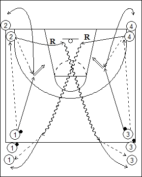

Catégorie : ECHAUFFEMENT (Ech-005)
Déroulement
- Quatre files de joueurs. Les ballons sont au niveau de la ligne médiane dans les files 1 et 3.
- Le premier joueur de la file 1 passe au premier de la file 2, qui lui remet pour un jump shoot. Dans le même temps, les premiers joueurs des files 3 et 4 réalisent le même travail.
- Après sa passe à 1 pour le shoot, le premier joueur de la file 2 effectue le rebond, passe au premier joueur de la file 3 qui n’a pas de ballon et va derrière cette file. 1 va en 2. Après sa passe à 3 pour le shoot, le premier joueur de la file 4 effectue le rebond, passe au premier joueur de la file 1 qui n’a pas de ballon et va derrière cette file.
Coaching points
- Afin d’éviter les deux shoots simultanés, on peut demander un jump shoot d’un côté et un lay-up de l’autre.